AI Academy · Level 4 · Grade 9 · Week 13 · Student lesson
Train a Classifier
Learn to understand, design, build, test and explain AI systems responsibly.
Project: Responsible Plant Classifier
Before you start
Week 11: selecting a threshold is different from applying it.
Plan time to read, investigate and explain. Keep predictions separate from observations.
Student lesson · 1 of 15
Your mission
Your learning target
I can connect training-only scaling and neighbour prediction in one pipeline.
I can reproduce predictions from recorded data settings and fitted values.
I can audit a pipeline for refitting feature-order errors and evaluation leakage.
Remember before reading
Close your notes first. A rough first answer helps us choose the right starting point; it is not a score for your ability.
Without opening the old lesson, explain one key idea from Nearest Neighbors. Give an example and a mistake that the idea helps you avoid.
Without opening the old lesson, explain one key idea from Baselines First. Give an example and a mistake that the idea helps you avoid.
Without opening the old lesson, explain one key idea from Sampling and Intended Use. Give an example and a mistake that the idea helps you avoid.
After trying, check the relevant lesson or ask your teacher. Change the part of your explanation that the evidence shows was wrong.
Training fits model parameters from labeled examples; prediction applies the frozen fitted model to new feature rows.
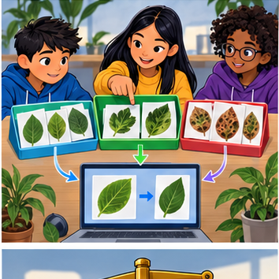
Builder name and experiment date:
Readiness for the connected explanation
Which values does min-max scaling learn, and which values should be reused for a validation query?
Readiness for Searching candidate rules
How does a training-majority baseline choose its prediction, and where is its validation accuracy measured?
This week’s end goal
By the end, I can explain train a classifier using a traced example and a stated limitation.
Student lesson · 2 of 15
Notice the evidence
PICTURE ENTRY
Notice → Predict → Explain
Begin with visible evidence; do not explain more than the picture and information support.
Name three visible details without interpreting them.
Predict the data, model, or evaluation decision being made.
Identify one hidden assumption that could change the result.
State what evidence would confirm or reject your prediction.
My prediction and supporting evidence:
A closer explanation
A pipeline connects steps so a new query receives the same preparation as the training examples. This week combines the scale from Week 11 with a one-neighbour classifier. We will fit once, keep the fitted state, and call one prediction function for every raw query.
Use the same fictional trip data. Each feature pair is ordered (distance in cm, brightness in sensor units). Training IDs are A,B,C. Validation IDs V1,V2,V3 belong to separate trips; related trips were grouped before splitting. Use min-max scaling, sum of absolute scaled differences, k=1 and alphabetical ID order for exact distance ties.
| Training ID | Feature pair | Label |
|---|---|---|
| A | (10,200) | clear |
| B | (20,100) | blocked |
| C | (20,200) | blocked |
The input contract requires two finite numeric features in the stated order and units, with no missing values. Training also needs unique IDs, known labels, at least one row and nonzero ranges. These assumptions must be checked before this short classroom program is used; its explicit guard only checks zero ranges.
Apply the connected idea: Searching candidate rules
Last week the baseline ignored scene features. This week a small fitting algorithm will choose a rule that uses one feature. We supply the rule form: predict blocked when a distance reading is at or below a cutoff, otherwise predict clear. The algorithm will try three cutoffs and keep the one making the fewest training mistakes.
The teacher-authored fictional rows contain a sensor distance in centimetres and a separate reviewed lane label, blocked or clear. The reading is available before prediction; the label comes from the scene review. A single distance need not describe every obstruction. These numbers are for learning, not real robot control. Each row comes from a different trip, and training and validation trips are separate.
| Training row | Distance in cm | Reference label |
|---|---|---|
| 1 | 2 | blocked |
| 2 | 4 | blocked |
| 3 | 6 | clear |
| 4 | 8 | clear |
Before scoring, declare cutoffs 3, 5 and 7 cm in ascending order, predict blocked at equality, and keep the smaller cutoff if training errors tie. This search tests only these three rules with this direction. It does not find the best possible model or prove that distance causes the label.
Student lesson · 3 of 15
See how it works
ML MECHANISM
Input → Model → Evidence
Trace the information, fitted behavior, and evaluation proof separately.
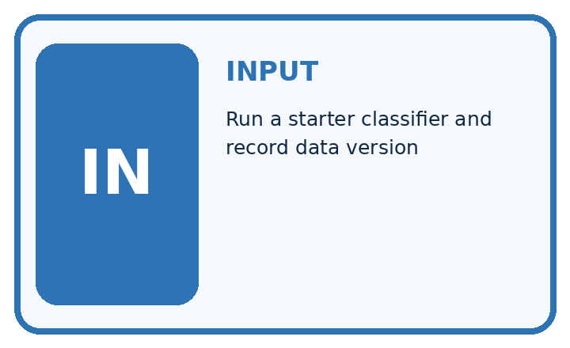
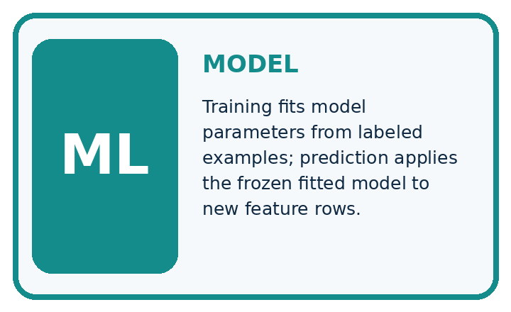
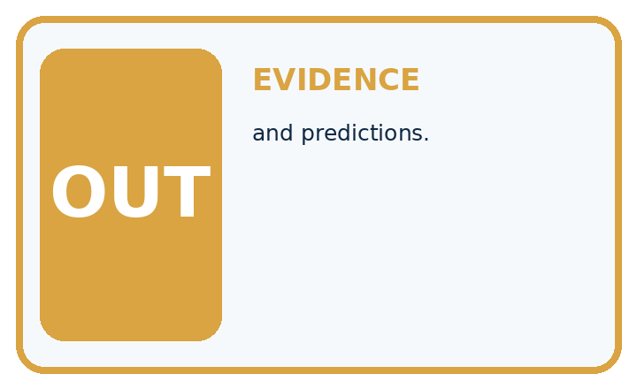
QUESTION Run a starter classifier and record data version, split, settings, and predictions.
MODEL IDEA Training fits model parameters from labeled examples; prediction applies the frozen fitted model to new feature rows.
PROOF NEEDED Use an unseen case, visible calculation, error analysis, and a stated limitation.
Draw a fresh data → model → prediction → evaluation trace:
A closer explanation
def scale(x, low, span):
return tuple((x[j] - low[j]) / span[j] for j in range(2))
def fit(rows):
xs = [x for item_id, x, label in rows]
low = tuple(min(x[j] for x in xs) for j in range(2))
span = tuple(max(x[j] for x in xs) - low[j]
for j in range(2))
if 0 in span:
raise ValueError("Review a constant training feature")
stored = tuple((i, scale(x, low, span), y) for i, x, y in rows)
return low, span, stored
def predict(x, model):
low, span, stored = model
q = scale(x, low, span)
ranked = sorted((sum(abs(a - b) for a, b in zip(q, v)), i, y)
for i, v, y in stored)
return ranked[0][1], ranked[0][2]
train = [("A", (10, 200), "clear"),
("B", (20, 100), "blocked"),
("C", (20, 200), "blocked")]
model = fit(train)
queries = [(11, 120), (19, 190), (12, 80)]
for x in queries:
print(predict(x, model))fit returns minima (10,100), ranges (10,100) and scaled training examples. predict transforms a raw query with that state, ranks distances, then returns the selected ID and label. zip pairs matching features; sum adds their absolute differences. sorted uses distance first and unique ID second.
Run the whole script in Python 3. It prints ('A', 'clear'), ('C', 'blocked'), ('B', 'blocked') on separate lines. No validation labels enter fit or predict. This is a small pipeline written with functions, not the scikit-learn Pipeline class.
Apply the connected idea: Searching candidate rules
train = [(2, "blocked"), (4, "blocked"),
(6, "clear"), (8, "clear")]
best_errors = len(train) + 1
best_cutoff = None
for cutoff in [3, 5, 7]:
errors = 0
for distance, label in train:
guess = "clear"
if distance <= cutoff:
guess = "blocked"
if guess != label:
errors = errors + 1
print(cutoff, errors)
if errors < best_errors:
best_errors = errors
best_cutoff = cutoff
print("chosen", best_cutoff)The output lines are 3 1, 5 0, 7 1, then chosen 5. Cutoff 3 misses the blocked row at 4 cm. Cutoff 5 matches all four training labels. Cutoff 7 wrongly marks the 6 cm clear row as blocked. Fitting stores cutoff 5; prediction then applies that stored rule to a new distance.
Separate search from later scoring
best_errors starts above any possible mistake count. The strict < keeps the first tied candidate; ascending order makes that the smaller cutoff. The code assumes nonempty training data, numeric distances and the two allowed labels. Validate those assumptions before using another dataset.
Connect the picture and the explanation
Point to the input, the deciding step and the result in this week’s visual. Explain the same step in ordinary words. A picture helps when you can say what each part represents.
Student lesson · 4 of 15
Compare the cases
EVALUATION DESIGN
Four Tests, Four Kinds of Evidence
A system is not understood until it survives more than one comfortable example.


NORMAL Expected data and expected behavior.
BOUNDARY Value close to a threshold, ambiguous label, or uncertain prediction.
MISSING Necessary field, label, source, or measurement is unavailable.
SHIFTED New lighting, species, device, subgroup, or time condition.
Which case most threatens today's claim, and why?
Change one thing in the pictured case
Change: Transform training but leave query numerically at 5.
Prediction: Distances become 15 and 55, incorrectly selecting healthy.
Reason: The query is now compared in inconsistent units; the changed result is a pipeline defect.
Student lesson · 5 of 15
Words that unlock the idea
VOCABULARY
Words You Can Calculate and Defend
A definition matters when it lets you interpret a new dataset, model, or result.
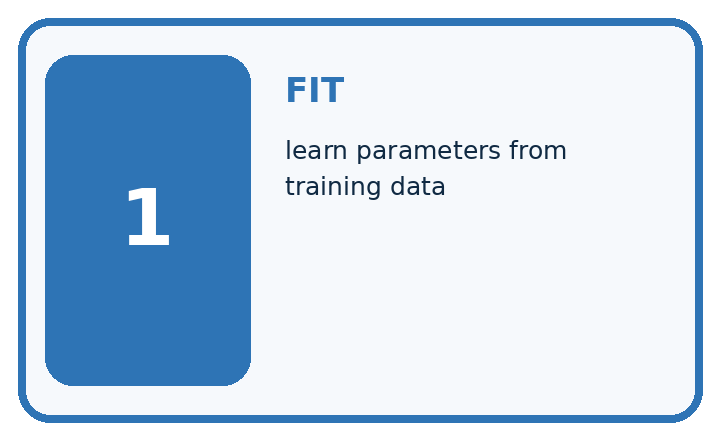
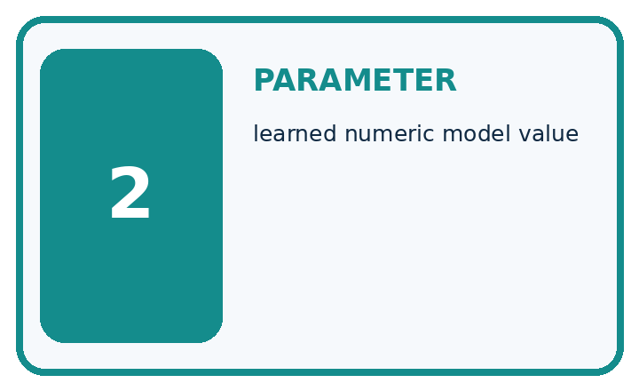
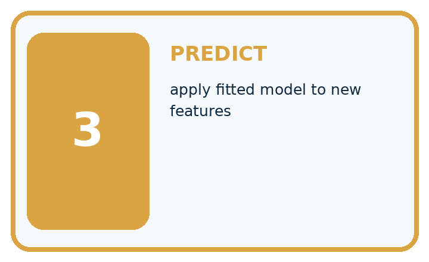
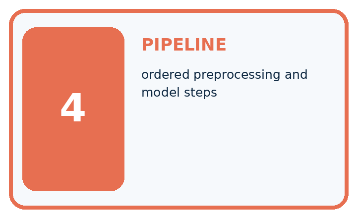
| Term | Precise meaning | My ML example |
|---|---|---|
| fit | learn parameters from training data | |
| parameter | learned numeric model value | |
| predict | apply fitted model to new features | |
| pipeline | ordered preprocessing and model steps |
Repair the claim using a definition, calculation, or test record:
Words used in the closer explanation
| Word | Meaning |
|---|---|
| Pipeline | An ordered sequence of data transformations and prediction steps |
| Fitted state | The learned values and stored examples needed to make predictions |
| Reproduce | Obtain the same result using the same recorded inputs and procedure |
| Input contract | The documented feature names order units and accepted values |
Terms for Searching candidate rules
| Term | Meaning |
|---|---|
| Candidate rule | One possible prediction rule in a declared search |
| Threshold | A numerical boundary used to choose between outcomes |
| Training error | A mismatch between a prediction and its reference label in training data |
| Fitting | Using training examples to choose a model value or rule |
Student lesson · 6 of 15
Follow a worked example
WORKED EVIDENCE
Reason Step by Step
Predict first. Then check each step. A correct answer without visible evidence cannot be audited.
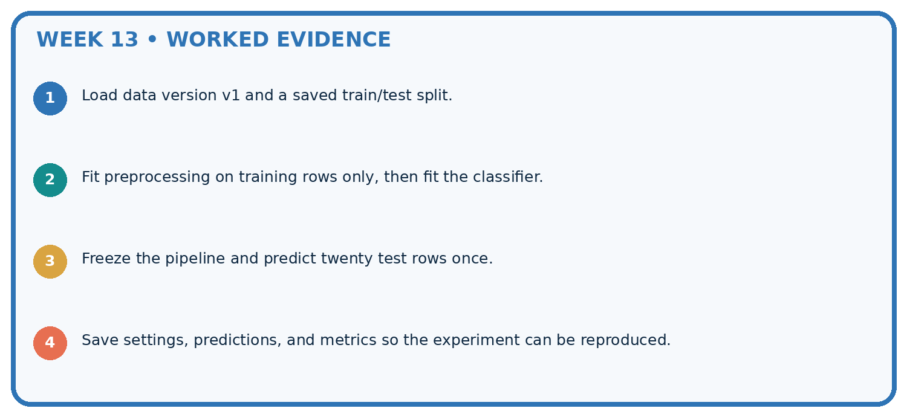
STEP 1 Load data version v1 and a saved train/test split.
STEP 2 Fit preprocessing on training rows only, then fit the classifier.
STEP 3 Freeze the pipeline and predict twenty test rows once.
STEP 4 Save settings, predictions, and metrics so the experiment can be reproduced.
Recalculate, retrace, or restate the evidence independently:
A closer explanation
Two stages with one fitted state
For raw query (11,120), scale gives (0.1,0.2). Distances to A,B,C are 0.9,1.1,1.7, so the function returns A and clear. It does not recalculate minima or add the query to stored rows. The returned ID is useful for checking the reasoning, but it is not evidence that the label is true.
Store the fitted state together with the input contract and method settings. A model without its scale or feature order is incomplete. Swapping the raw pair to (120,11) produces B and blocked here; the function cannot detect that the caller swapped the meanings.
Apply the connected idea: Searching candidate rules
Now reveal four validation rows in order: (3, blocked), (5, clear), (7, clear), (9, blocked). With the stored cutoff 5, predictions are blocked, blocked, clear, clear. Rows 1 and 3 match, so validation accuracy is 2/4 or 50 percent despite zero training mistakes.
The training labels tie at two blocked and two clear. Carry forward Week 7’s baseline tie rule, choose clear. That baseline matches validation rows 2 and 3, also 2/4 or 50 percent. The fitted rule has not improved total accuracy on this set, and the two methods make different mistakes.
Keep the rule and baseline fixed for this comparison. Do not secretly choose a different cutoff after seeing validation labels and call that a training-only choice. Validation can guide later development, but record those choices and reserve an untouched final test. No final test is supplied here.
Learn from the worked case
Cover the result before checking it. Say what is given, choose the procedure, and follow one step at a time. Then uncover the result and explain your first mismatch. Ask why a step is allowed, not only what number it produces.
A pictorial worked case: Train a Classifier
Separate a reproducible fitted pipeline from merely displaying predictions.
The facts we will use
Toy training lengths are [2, 6] cm with labels [healthy, spotted]. Pipeline converts cm to mm, then uses k=1 absolute distance. Query is 5 cm.
All inputs and outcomes in this worked example are invented classroom data; no real model run is claimed.

Read the picture one step at a time
Why this result follows
Read the picture in order. Distances 30 and 10 mm select the spotted training record. The arrows show which recorded input or intermediate result each decision uses. Explain the deciding step aloud before checking the changed case; pointing to the final answer alone does not show how it follows.
What this example does not establish
A reproducible toy pipeline can still perform poorly; evaluation must use separate records and appropriate group splits.
Student lesson · 7 of 15
Find and repair a mistake
ERROR DETECTIVE
Compare → Diagnose → Repair
Do not patch the answer. Find the earliest unsupported assumption, data problem, or experiment error.
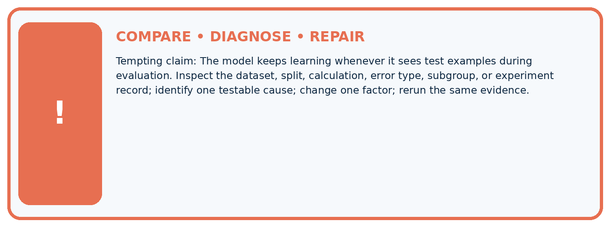
| Evidence record | Expected | Actual | Likely cause / next test |
|---|---|---|---|
| normal case | passes | ||
| boundary case | defined behavior | ||
| missing case | safe fallback | ||
| shifted case | measured limit |
Diagnose one cause and name the cleanest next experiment:
A closer explanation
Check that fit receives training rows only, predict receives raw features in the correct order, and the fitted state stays unchanged during prediction. Do not scale a query twice, fit again on validation, or add labelled validation rows to the neighbour pool. A pipeline still leaks if the wrong rows are passed to its fit step.
The tuple state groups the learned numbers and stored examples. Keep the associated data and code versions with it, and compare stored values and outputs when repeating a run. Do not accept a matching score alone: two different prediction lists can have the same score.
Apply the connected idea: Searching candidate rules
Humans chose the feature, labels, candidate cutoffs, direction and scoring method. The program used training examples to select the cutoff. That is a small example of fitting a model; writing a loop alone does not make a method learn. Choosing the cutoff in advance without consulting training examples would instead be a fixed rule.
Record the source and split, rule form, candidate list, all training error counts, tie policy, selected cutoff and both validation prediction lists. Do not discard a difficult row to improve a score. Next week a decision tree will extend the idea of feature-based decisions, while the need for honest evaluation stays the same.
Student lesson · 8 of 15
Practise together
ML STUDIO
Specify Before You Run
A trustworthy result can be reproduced from the recorded data, code, settings, and evaluation rule.

Experiment record
QUESTION + intended use + success threshold
DATA version + grouped split + leakage check
CODE/preprocessing + features + model + settings + seed
METRICS + positive class + units + denominators
PREDICTIONS + errors + subgroup slices + limitations
HUMAN reviewer + release, revise, limit, or stop decision
Write the minimum record needed to reproduce today's result:
A closer explanation
Record dataset and code versions, training IDs A B C, validation IDs V1 V2 V3, feature order and units, fitted minima and ranges, k=1, distance and tie policy, zero-range policy and the actual Python version. Save the predictions in validation ID order. This script has no random step; a seed would not fix changed data or swapped features.
References for V1,V2,V3 are clear,blocked,clear. The printed predictions clear,blocked,blocked match V1 and V2: 2/3. The training-majority blocked baseline matches only V2: 1/3. Rerunning the same code and inputs should reproduce these outputs, including the V3 mistake. Reproducibility does not establish correctness or performance on new data.
Changing the scaling, k or feature list creates a new development run to record. Keep a separate final test for the final evaluation. Next week a confusion matrix will show which kinds of label errors the predictions make.
Apply the connected idea: Searching candidate rules
A learner uses distance < cutoff instead of distance <= cutoff during prediction. That changes the boundary: at 5 cm the stored cutoff now predicts clear. Recheck code against the declared rule before interpreting the score. A small symbol can change which examples match.
Another learner uses <= when deciding whether a candidate has fewer errors. That replaces an earlier candidate on a tie. The prediction boundary <= and the search comparison < have different jobs. Use the declared tie policy; a tied training score gives no evidence that one tied rule will be better on new cases.
Practise with less help: Trace and score the saved run
Use workbook W2 for the connected example “A reproducible classifier pipeline”. First fill the input and rule boxes. Try the middle steps before asking for a hint. After a hint, try the next step yourself.
| Plan | Do | Check |
|---|---|---|
| What is given? Which rule or procedure applies? | Record each intermediate step. | Does the result follow? What remains unknown? |
Explain your trace to a partner. Your partner points to one step to check. Swap roles on the next case. Each person writes their own explanation.
Check your reasoning
Use the worked case for A reproducible classifier pipeline. Proposed explanation: “A pipeline prevents every leak automatically”. Decide whether this explanation is supported. Point to the step or supplied fact that decides; explain your repair if needed.
Answer on your own before discussion. If you are unsure, say which step you need help with.
Practise the connected topic: Searching candidate rules
Use its named workbook W2. Identify the given inputs, try the middle steps with less help, then explain your trace. Check this claim before group discussion: Zero training error means perfect predictions
Explain the picture
Which pipeline record would help another team reproduce the result? Point to the relevant step in the picture, then write the changed result and the rule or evidence that supports it.
This is supported practice. Keep the separately named independent case for an attempt before feedback.
Student lesson · 9 of 15
Run the investigation
EVIDENCE LAB
Predict → Run → Calculate → Interpret
Keep the test conditions fixed, record every result, and change only one planned factor.
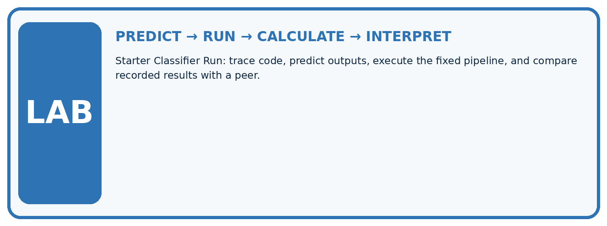
1. Write the hypothesis and expected evidence before running.
2. Starter Classifier Run: trace code, predict outputs, execute the fixed pipeline, and compare recorded results with a peer.
3. Run one normal, one boundary, one missing, and one shifted case.
4. Calculate the metric from raw counts or row-level errors.
5. Interpret what changed, what did not, and what remains unsafe or unknown.
| Case | Prediction | Actual | Calculation / evidence | Meaning / next test |
|---|---|---|---|---|
| Normal | ||||
| Boundary | ||||
| Missing | ||||
| Shifted |
Plan → try → check
Before trying: what do I expect, and why? While trying: which step could first go wrong? Afterwards: what did I actually observe, and what should change? Keep “not run” if you only traced the procedure.
Student lesson · 10 of 15
Build your understanding
MASTERY
From Knowing the Word to Owning the Idea
Move upward only when you can produce evidence without copying the example.

DEFINE Use all four terms precisely: fit, parameter, predict, pipeline.
CALCULATE Reproduce the worked evidence with units and denominator.
TRACE Explain the data, code or decision path.
DIAGNOSE The model keeps learning whenever it sees test examples during evaluation.
TRANSFER Solve a fresh dataset or model case.
IMPROVE Change one cause and rerun fixed evidence.
DEFEND State intended use, metric, limitation, and human responsibility.
Student lesson · 11 of 15
Connect your project
CUMULATIVE PROJECT
Responsible Plant Classifier
Every week adds one reviewable artifact to the same evidence-based capstone.
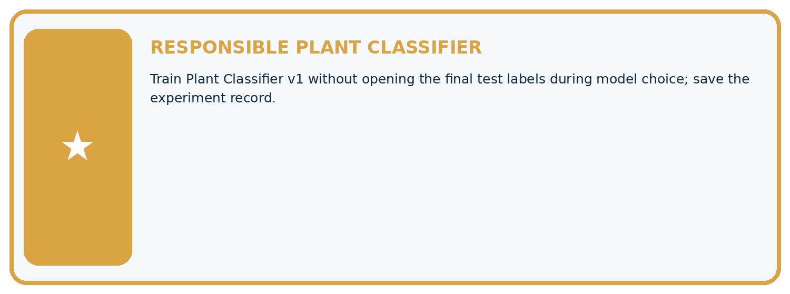
Which requirement or risk does this artifact address?
Which dataset, split, code, and metric version does it use?
What normal and shifted cases were tested?
What remains uncertain or weak?
What decision still belongs to a teacher or qualified human?
My evidence-linked project decision:
Evidence for your project
For your Responsible Plant Classifier, save the input, procedure, observed result and limitation of this check. Label this worked example as practice; use a different, previously unreviewed case when checking independent understanding.
Student lesson · 12 of 15
Show what you know
INDEPENDENT PROOF
Explain • Calculate • Transfer • Defend
Complete this with a fresh case after guided practice and compare it with the mastery criteria.
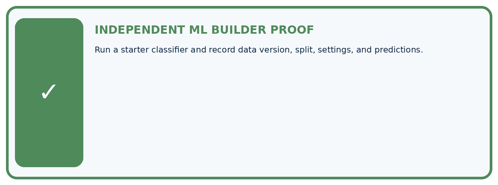
□ Define the task, feature/target roles, and intended-use boundary.
□ Show the calculation, code trace, or experiment record.
□ Test a normal case and one revealing boundary, missing, or shifted case.
□ Diagnose one failure without changing several factors at once.
□ Name a limitation, fairness concern, and the human-review action.
Independent evidence and defense:
My level: □ Not yet □ With one hint □ Independently □ I can teach and defend it
Student lesson · 13 of 15
Study a complete case
Week 13 Worked case
Use the supplied details to practise the weekly concept before attempting the independent question. This case extends the illustrated lesson.
The situation
Training is (0,H),(1,H),(4,S),(5,S). Candidate rule predicts S for spots>=3. Held-out cases are (2,H),(3,S).
The question
Apply the rule and distinguish fitting from inference.
Worked explanation
Predictions H,S give 2/2 on this tiny set. Choosing the rule is development; applying it is inference. Two cases do not establish broad performance.
Explain it in your own words
Which detail supports the answer, and why does it matter?
Trace the supplied case visually
Apply a developed rule to new cases
| Evidence or stage | Value or result |
|---|---|
| Training | 0 and 1 labelled H, 4 and 5 labelled S |
| Supplied rule | Spots at least 3 predicts S |
| Test 2 spots | Predict H |
| Test 3 spots | Predict S |
Training is (0,H),(1,H),(4,S),(5,S). Candidate rule predicts S for spots>=3. Held-out cases are (2,H),(3,S).
Apply the rule and distinguish fitting from inference.
Predictions H,S give 2/2 on this tiny set. Choosing the rule is development; applying it is inference. Two cases do not establish broad performance.
Student lesson · 14 of 15
Try a new case independently
Independent case: Build and trace a fresh fitted state
Use P (0,60) blocked, Q (20,20) clear, R (20,60) clear as new training rows. Fit the same pipeline. Predict validation queries (2,28),(18,56),(4,12) with references blocked,clear,blocked. Give fitted minima and ranges, transformed queries, selected IDs, predictions, accuracy and training-majority baseline.
Attempt this case before feedback. Record any help. Earlier examples below are further practice; a case already practised with feedback cannot establish fresh transfer.
Week 13 Independent application
Close the worked explanation. Apply the idea to this different question without copying.
A classifier fits on rows 1–80 and is evaluated on those same rows. Its accuracy is 100%. What additional evidence is needed before claiming generalization?
My answer, with a trace, calculation or supporting evidence
Create and test
Change one relevant detail. Predict the result before testing. Include a boundary or missing-information case when it helps reveal a limit.
My changed input and expected result
Connect to your project
Train Plant Classifier v1 without opening the final test labels during model choice; save the experiment record.
The evidence I will keep
Your teacher has the independent answer and scoring criteria. Complete the matching workbook week to keep your practice evidence together.
Transfer practice from the original programme
Training: spots 0:H,2:H,4:S,6:S. Compare rules S if spots>=1,>=3,>=5. Choose by training accuracy, then predict held-out 1:H and 5:S without revising. Report both stages.
Use feedback to improve
Attempt the independent case before hints. Record whether you worked alone, used a hint or followed a model. After feedback, fix the first unsupported step and explain why it changed. A later check uses a changed case, not a copied answer.
Student lesson · 15 of 15
Fit and test a threshold classifier
Fit and test a threshold classifier
The program chooses a threshold using training labels only. Spotted is 1 and healthy is 0. Candidate thresholds lie between consecutive training values. Test rows are used after selection.
"""Fit a threshold using training data, then evaluate untouched examples."""
train = [(0, 0), (1, 0), (4, 1), (5, 1)]
values = sorted({x for x, y in train})
if len(values) < 2:
raise ValueError("Two distinct training values are required")
candidates = [(a + b) / 2 for a, b in zip(values, values[1:])]
def errors(threshold):
return sum(int(x >= threshold) != y for x, y in train)
threshold = min(candidates, key=errors)
test = [(2, 0), (3, 1)]
predictions = [int(x >= threshold) for x, y in test]
correct = sum(pred == y for pred, (x, y) in zip(predictions, test))
print(threshold, predictions, correct, len(test))
Expected output: 2.5 [0, 1] 2 2
Candidate thresholds 0.5, 2.5 and 4.5 have training errors 1, 0 and 1. The selected threshold is 2.5. Both test predictions are correct. This tiny artificial example demonstrates fitting and evaluation; it does not establish reliability on real leaf photos.
Independent code change
Change the final test row to (3, 0), keeping training unchanged. Predict before running.
My prediction and evidence